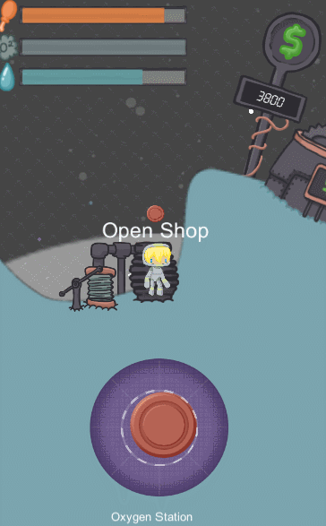
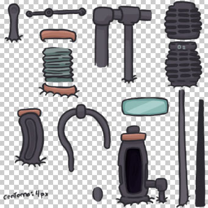

My role in this project: EVERYTHING!
tl;dr: A space survival game, which is actually the first game I tried to make after I got my bachelor's in game design. I learned many cool things by making it but in the end there were too many bugs and problems I couldn't fix so I moved on to other projects, planning to return one day when I have more time, money and skill to make the game again, entirely from scratch and without the many problems it currently has.
Astria: The Space Gurl was the first game that I made after finishing college. It holds a special place in my heart, because it was my first actual game, made 100% by myself. It was such a good feeling to make it, I had just finished college, where during every semester, the games were limited by themes defined by a board of teachers, and even the simplest mechanic had to be changed based on the opinions of the people of the team. I always knew that limitations like that are prominent in the game industry, but that very knowledge made the development of Astria so much more special to me, because while making it, the only limitations were my skills.
I created the game out of a need I felt when browsing Google Play Store back then: there were no good survival games. I would search for survival-game-related terms and would be bombarded with a seemingly endless list of effortless, annoying minecraft clones, games that to me are a disease that is slowly killing the mobile market.
I remember having the idea of the game during a lazy afternoon at the beginning of 2015, when I simply started scribbling and doodling the main features of the game. Also, I really wanted to use what I had learned a year before with my research paper about one handed mobile game usability.
The game takes place in an asteroid in space. You control a space gurl called Astria, and the asteroid you inhabit contains machines, farms and pumps that help with your survival. You get money by crushing meteors that you collect in space, and with money you can upgrade your machines and buy new ones, like fuel pumps and rocket shops to buy spaceships and go to deep space.

I always thought that digital dual-sticks felt terrible in mobile games (though I don't think this topic was present in my research), because you can't feel both input methods due to a lack of haptic feedback in most phones, so coordinating two touch joysticks at the same time without feeling them can be tricky. But a single digital joystick seemed like it could work. And so I implemented it, but what about selecting things? I didn't want to add a button next to the joystick, so I thought of something I had never seen before, a digital joystick with a contextual button. It worked simply by creating a button in the place of the "handle" of the joystick, whenever an action was needed. You could simply release the joystick and press the button. Of course, the whole game had to be designed around this concept.

Sadly, the enthusiasm I had while making this project wasn't enough when it came to enduring the many implementation problems I had during development. I wasn't that good of a programmer back then so there were bugs that I could never fix and that would hinder development a bit... Well, the bugs started accumulating. I tried to switch my focus to making the art assets of the game, and it really helped with my motivation when I started to see it actually look like a game. But the bugs started to become too evident, the work-arounds stopped working and the project came to a point where it was the equivalent of a machine being held together by glue and rubber bands. I basically needed to start everything from scratch if I wanted to see it work. But I couldn't simply star over, so eventually I moved on to other projects.
It's a shame that I didn't finish the project, but it was a good thing to have such an eye-opening situation happen right at the start of my game making career. I moved on with my head held high, glad to have learned so many important things and techniques, like working with save games, having a game manager class, and using the google play developer console. One day when I have more free time and more peace of mind i'll definitely tackle this game again and remake it from the ground up, using my programming knowledge which is considerably greater today than it was in 2015!
Here are some other development images and gifs.

You can download the .apk with the demo here.
What you can do: This version was when some intermediate mechanics were starting to take form. Walk around the asteroid. Interact with the different machines. Use the cheat (the old man on the spaceship) to get money (as there is no balanced/viable way to get money so far). Buy a rocket and rocket parts, equip them, fly around.